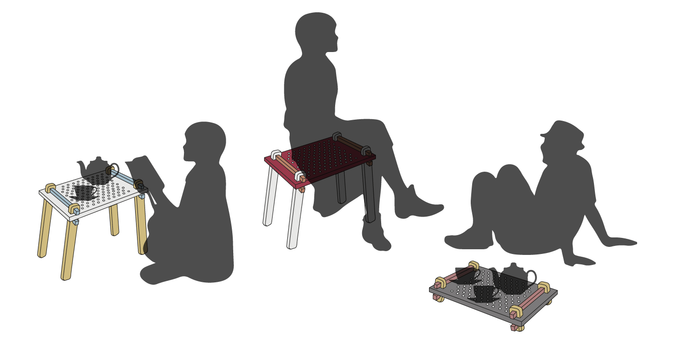
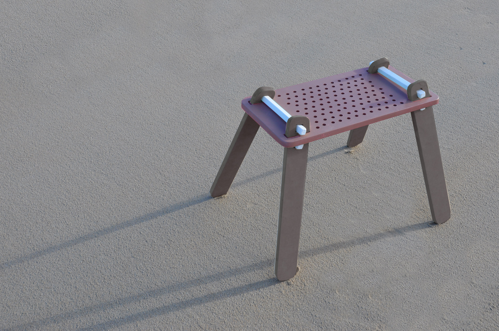
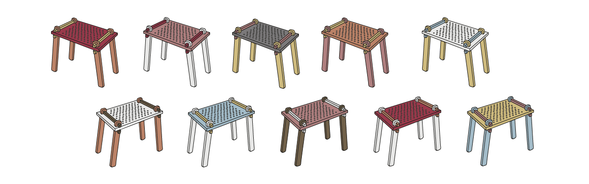
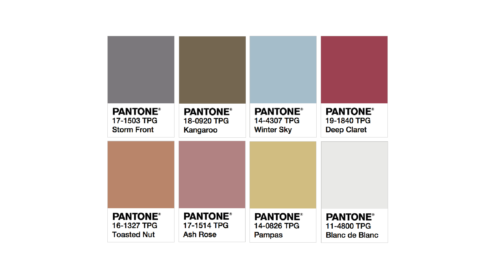
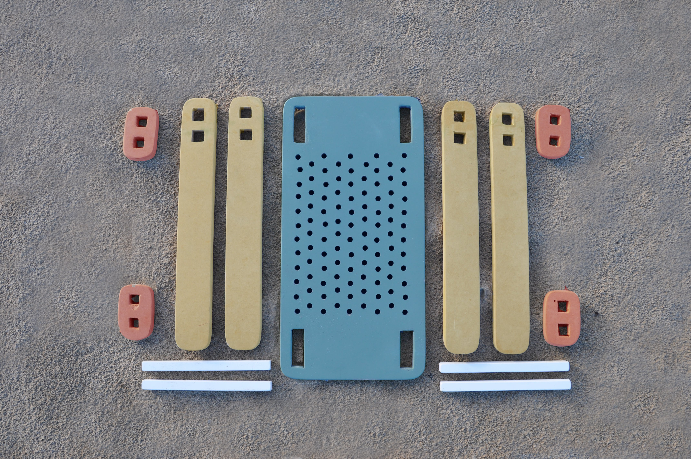
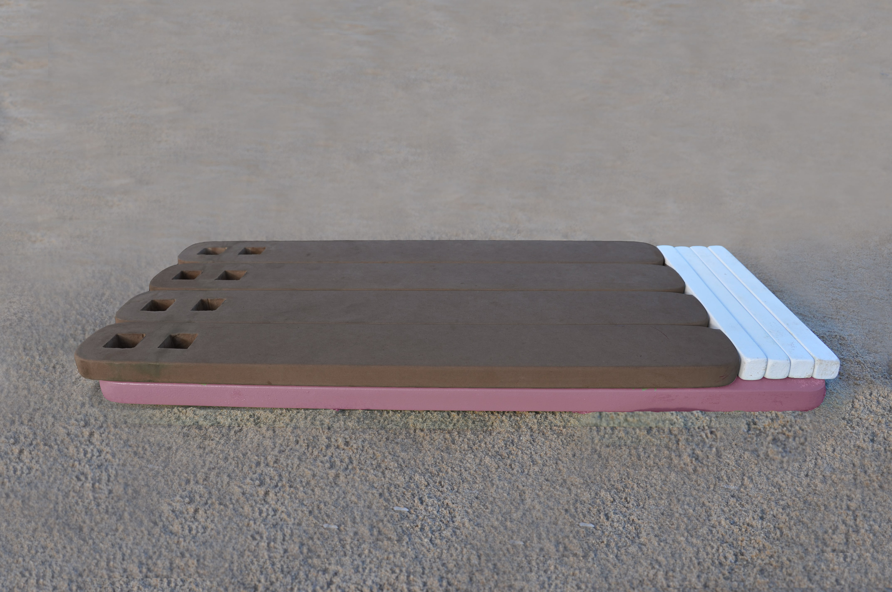
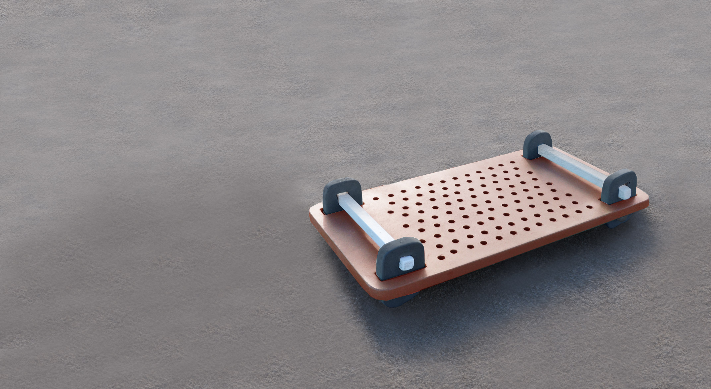

Tabourette - A Nomadic surface
________________________________________________________________

●
When you have a Nomad way of living, the belongings you own need to have certain characteristics
that make them easy to install, store and transport. Tabourette is a stool, a table, a tray, a divider...
The user can use his creativity and ingenuity with a single object to obtain several functions.
Providing adaptability in different circumstances or places.
●

●
________________________________________________________________
"Tundra" color palette
is inspired by the colors of isolated landscapes. Soft but wild, reflecting a non-sedentary lifestyle.
●


________________________________________________________________
●


●
Disassembled it takes up a small flat space.
Making it functional for travelers in a van, caravan, car
or even for a day of bohemian picnics on the beach.
________________________________________________________________
●
